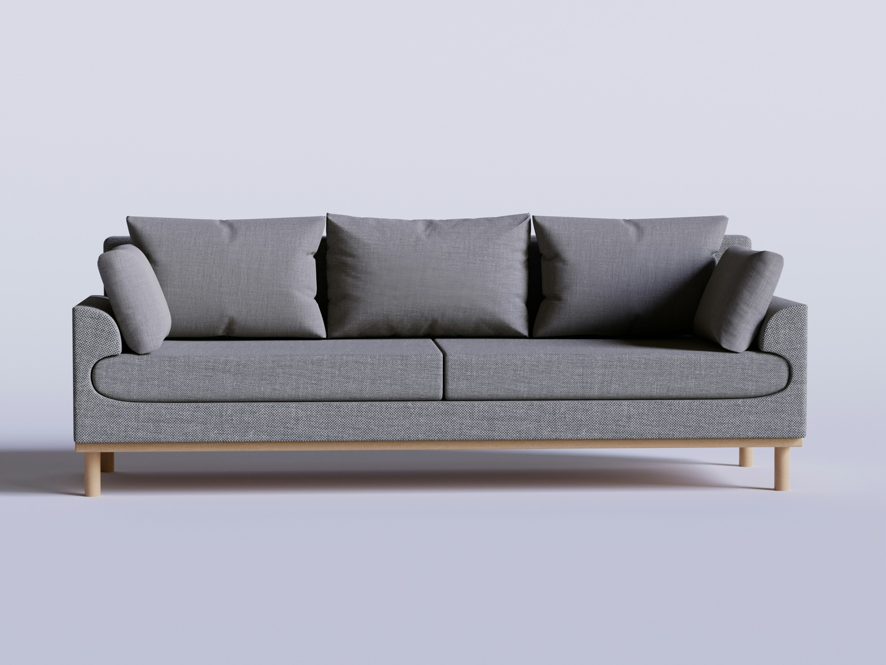
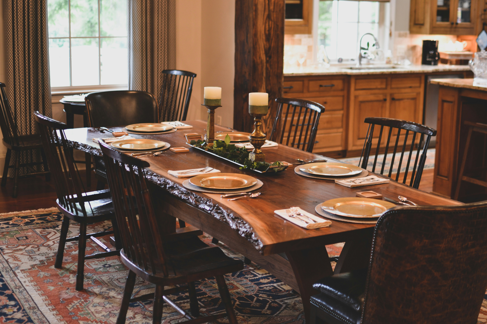

Sofá Seccional Júpiter

Sofá ergonómico diseñado para máxima comodidad, elaborado con madera maciza de pino.
Precio: $1.200.000 COP

Sofá ergonómico diseñado para máxima comodidad, elaborado con madera maciza de pino.
Precio: $1.200.000 COP

Mesa de roble acabada con aceites naturales para resaltar la veta de la madera.
Precio: $1.850.000 COP